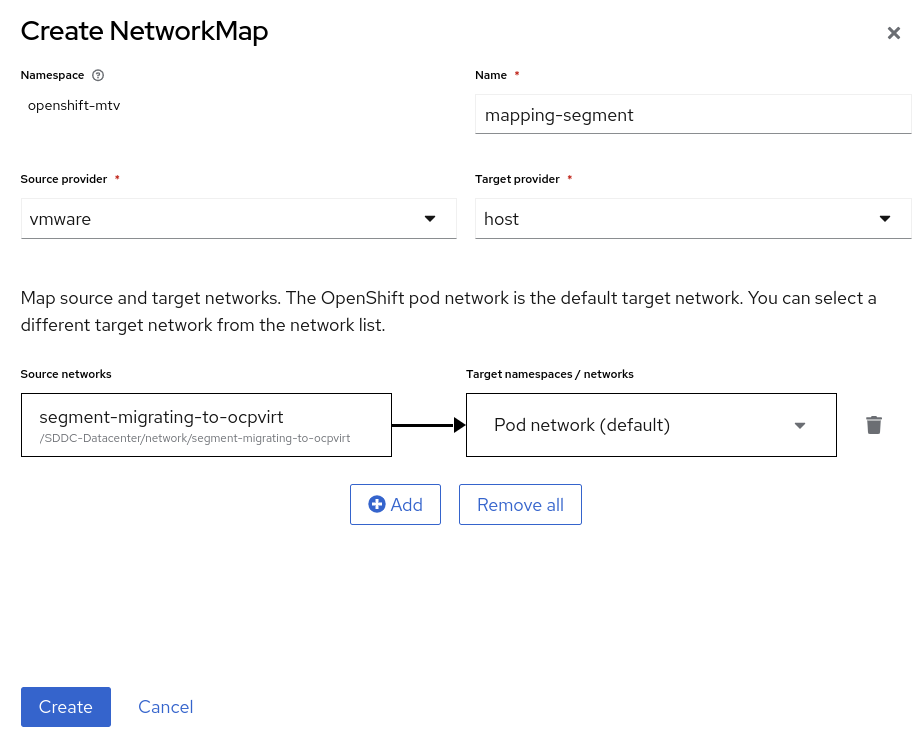
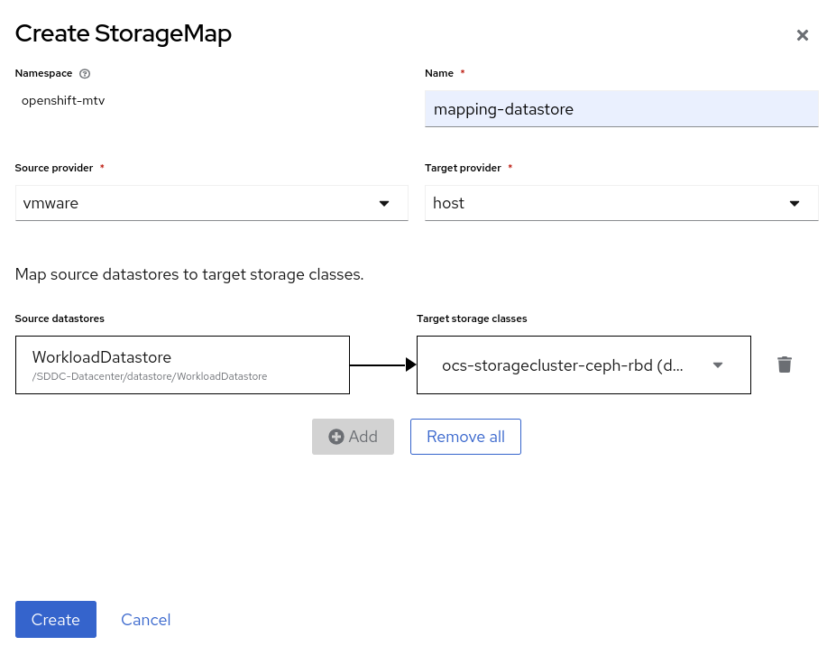
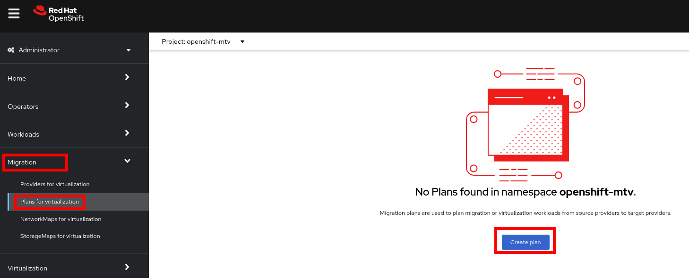
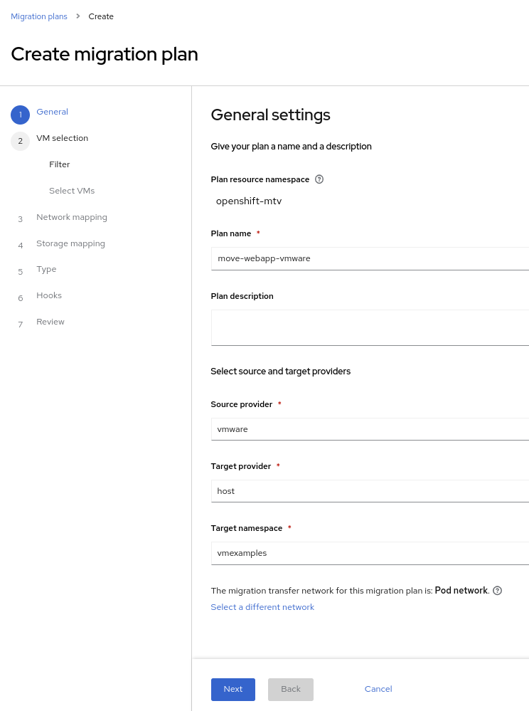
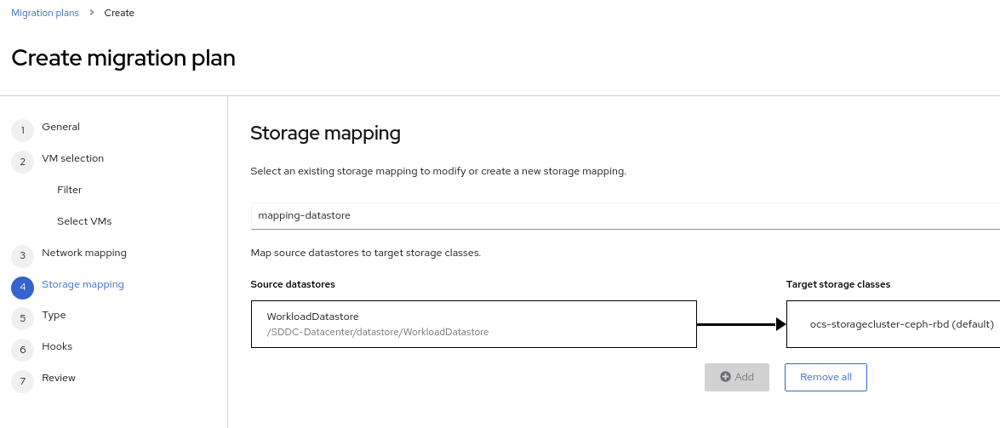
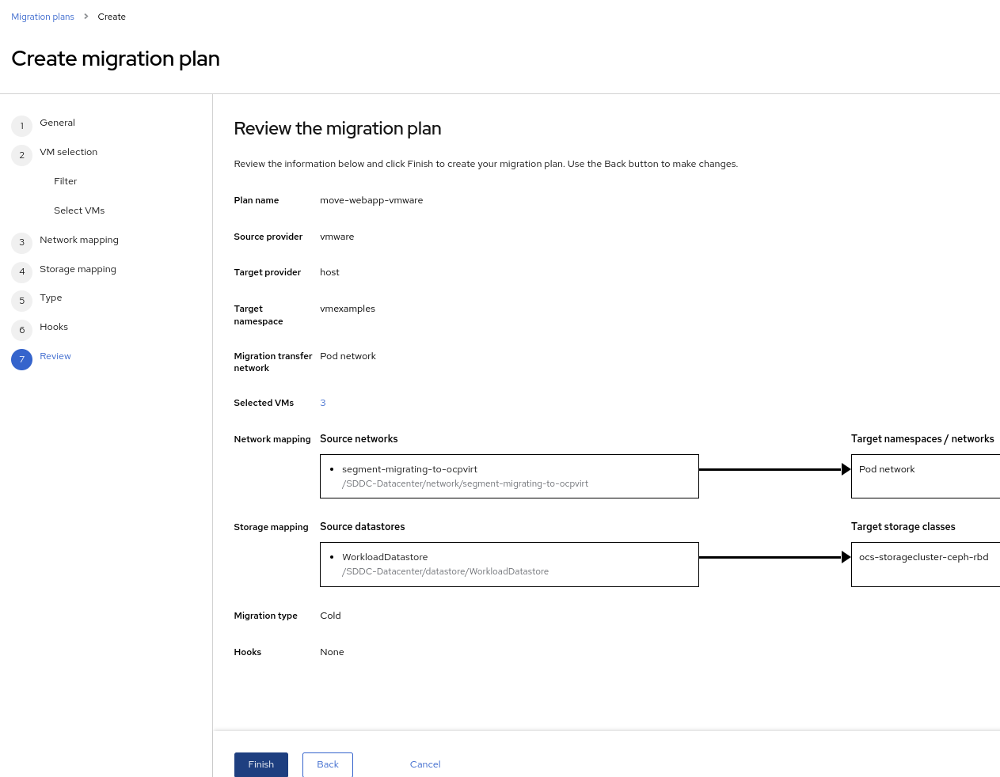

Migrating Virtual Machines
Introduction
This lab uses the Migration Toolkit for Virtualization (MTV) to import a virtual machine from VMware vSphere to OpenShift. The migration toolkit supports two "modes" of import:
-
Cold migration turns off the source virtual machine before starting the migration. This is the default migration type.
-
Warm migration copies data while the source virtual machine continues to run. Once the bulk of data has been migrated, the VM is shutdown and the final data is copied to the destination. The new VM can then be started, resulting in a much shorter period of downtime for the VM-hosted application.
The migration toolkit has already been deployed to your cluster using the Operator. Documentation for how to install and configure the Operator can be found here.
Prerequisites for the VMware Provider
The following prerequisites apply to all migrations:
-
ISO/CD-ROM disks must be unmounted.
-
Each NIC must contain one IPv4 and/or one IPv6 address.
-
The VM operating system must be certified and supported for use as a guest operating system with OpenShift Virtualization.
-
VM names must contain only lowercase letters (a-z), numbers (0-9), or hyphens (-), up to a maximum of 253 characters. The first and last characters must be alphanumeric. The name must not contain uppercase letters, spaces, periods (.), or special characters.
-
VM names must not duplicate the name of an existing VM in the OpenShift Virtualization environment.
The Migration Toolkit for Virtualization will automatically assign a new name to a VM that does not comply with the rules. If this happens, MTV will automatically generate a new VM name to allow the migration to proceed smoothly.
Migrating Virtual Machines from VMware
A three-tier application has been deployed on VMware for you to migrate to OpenShift.
The application consists of the following four virtual machines:
-
One HAproxy system that redirects traffic to the web servers
-
Two Microsoft Windows servers with IIS hosting a PHP application connecting to the database
-
One Linux system running a MariaDB database
The application is accessible from the following link: http://webapp.vc.opentlc.com/
You will migrate three of the four virtual machines using cold migration - you will not need to migrate the HAproxy (load balancer) VM because OpenShift handles network traffic and load balancing natively for VMs connected to the SDN using a Service.
Review the VMware environment
To help understand the process of mapping resources, such as datastores and port groups, from vSphere into OpenShift’s equivalents, network attachment definitions and storage classes, let’s begin by reviewing the source environment for the migrations.
-
Navigate to vCenter via https://portal.vc.opentlc.com
-
Login with the user
roadshow-ocpvirt-tp5z9@vc.opentlc.comand the passwordtlEOnKhrgRF9 -
By default you’ll see the VMs and Folders view, where you can see the four VMs representing the application.
 Note
NoteThe VMs with the suffix _runningare the active ones. As for the migration have to be stopped, a clone of the VMs were created for the migration. Those VMs are the ones without that suffix. -
Change to the networks view (or click this link), then expand the tree to view the port group used by the virtual machines. Note that the name is
segment-migrating-to-ocpvirt. -
Finally, review the datastore by browsing to the datastores view (or using this link). Expand the tree to see the name of the datastore,
WorkloadDatastore, and optionally browse to the VMs sub-tab to view the capacity used by each virtual machine.
Review the VMware provider to the migration toolkit
The Migration Toolkit for Virtualization (MTV) uses the VMware Virtual Disk Development Kit (VDDK) SDK to transfer virtual disks from VMware vSphere. This VDDK has already been set up for you in this environment.
-
Navigate in the left menu to Migration → Providers for virtualization
-
Select project
openshift-mtvTipMTV 2.4 and later are project/namespace aware and do not require administrator privileges. You can delegate VM imports to application teams and VM users so that they can self-serve and migrate at their own pace! -
By default, there is a provider called
hostwhich represents the OpenShift Virtualization as a target platform -
The lab is already configured with the VMWare provider named
vmware.
Create storage and network mappings
Storage and networking are managed differently in VMware vSphere and Red Hat OpenShift. Therefore it is necessary to maps from the source datastores and networks in VMware vSphere to the equivalent in OpenShift so that the migration toolkit understands how to connect and place virtual machines after importing.
These only need to be configured once and are then reused in subsequent VM Migration Plans.
-
Navigate in the left menu to Migration → NetworkMaps for virtualization and press Create NetworkMap
-
Fill in the following information in the appeared dialog. Press Create.
-
Name:
mapping-segment -
Source provider:
vmware -
Target provider:
host -
Source networks:
segment-migrating-to-ocpvirt -
Target network:
Pod network (default)
-
-
Ensure the created mapping has the Status
Ready -
Navigate in the left menu to Migration → StorageMaps for virtualization and press Create StorageMap
-
Fill in the following information. Press Create.
-
Name:
mapping-datastore -
Source provider:
vmware -
Target provider:
host -
Source storage:
WorkloadDatastore -
Target storage classs:
ocs-storagecluster-ceph-rbd (default)
-
-
Ensure the created mapping has the Status
Ready
Create a Migration Plan
Now that you have the virtualization provider and the two mappings (network & storage) you can create a Migration Plan - this plan selects which VMs to migrate from VMware vSphere to Red Hat OpenShift Virtualization and how to execute the migration (cold/warm, network mapping, storage mapping, pre-/post-hooks, etc.).
|
Note
|
Depending on order of you doing the modules, you might be missing required vmexamples namespace here. If you haven’t done yet, do chapter OpenShift Virtualization Basics → Create a new Project)
|
-
Navigate in the left menu to Migration → Plans for virtualization and press Create plan
 -
On the wizard fill the following information on the General settings step. Press Next when done.
-
Plan name:
move-webapp-vmware -
Source provider:
vmware -
Target provider:
host -
Target namespace:
vmexamples
-
-
On the next step, select
All datacentersand press Next -
On the next step select the three VMs: database, winweb01 and winweb02. Press Next:
-
On the Network mapping step select
mapping-segmentand press Next
-
On the Storage mapping step select
mapping-datastoreand press Next -
Press Next on the steps Type and Hooks
-
Review the configuration specified and press Finish
 -
Ensure the status of the plan is Ready
-
Press Start to begin the migration of the three VMs
-
After around 10 minutes the migration is completed
ImportantHaving many participants performing the same task in parallel can cause this task to perform slower than in a real environment. Please be patient.
Review and configure migrated Virtual Machines
Your VMs have now been migrated and can be started on OpenShift Virtualization. You could connect to the VM consoles and interact with them as you would in VMware vCenter.
If you want to learn more about how to use OpenShift and Kubernetes features with the application hosted in the imported virtual machines, complete the optional module "Exposing apps using a Route".
Summary
In addition to the Migration Toolkit for Virtualization, there are three other migration toolkits. The combination of these can be used to move many workloads into and within OpenShift clusters depending on your organization’s needs.
-
Migration Toolkit for Runtimes - Assist and accelerate Java application modernization and migration.
-
Migration Toolkit for Applications - Accelerate large-scale application modernization efforts to containers and Kubernetes.
-
Migration Toolkit for Containers - Migrate stateful application workloads between OpenShift clusters.
For more information about these, please reach out to your Red Hat account team.